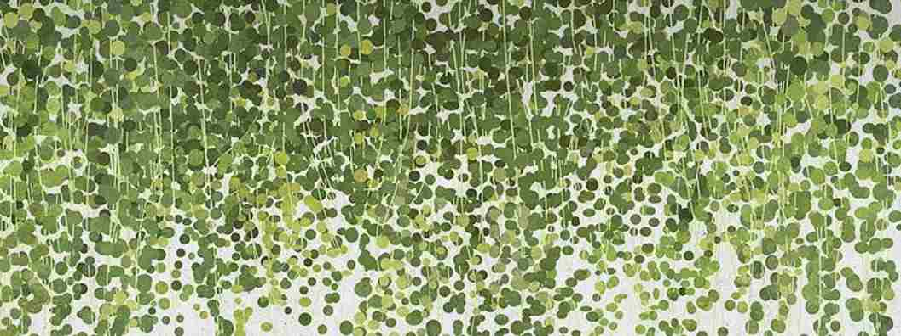

Débroussaillage

Pour préserver la beauté et la santé de vos espaces verts, notre service de débroussaillage vous aide à maintenir un environnement propre et sécurisé. Nous intervenons aussi bien pour l’entretien régulier que pour des actions plus ciblées, en adaptant notre approche aux besoins de chaque terrain. En supprimant les broussailles et les végétaux envahissants, nous favorisons la croissance de vos plantations et réduisons les risques liés aux incendies. Besoin d’un coup de main ? Contactez-nous via nos réseaux ou notre page contact.
Tout savoir sur le débroussaillage et l’entretien de votre terrain
Pourquoi débroussailler votre jardin ?
Le débroussaillage est essentiel pour préserver la propreté et la sécurité de vos espaces verts. Il permet de limiter les risques d’incendie, d’éliminer les végétaux envahissants et de favoriser la croissance des plantes en bonne santé.
Comment bien débroussailler ?
L’entretien d’un terrain passe par plusieurs étapes : couper les herbes hautes, retirer les broussailles, tailler les arbustes et évacuer les déchets verts. Selon la surface et la densité de la végétation, différentes méthodes peuvent être utilisées, du débroussaillage manuel aux outils motorisés.

Entretenir vos espaces après un débroussaillage
Une fois votre terrain nettoyé, un entretien régulier est recommandé pour éviter la repousse excessive et garder un espace agréable toute l’année. Pensez à renouveler l’opération plusieurs fois par an pour un jardin toujours impeccable.
Besoin d’un coup de main ? Contactez-nous via nos réseaux ou notre page contact.